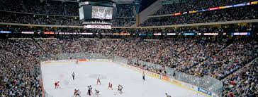

Sports Career
Hockey
This sport has been a major part of my life and has contributed to who I am today. I started playing when I was 5 and had many ups and downs since starting. I have won Championshps and I have lost them. By far the best experience I have had was playing at the Excel Energy center here in Minnesota. I was fortunate enough to be a part of one of the two Maple Grove highschool teams to play in the State Tournament. It will be an experience that I will never forget.

Lacrosse
I started lacrosse later in my life, I believe it was when I was around 13 years old but I have enjoyed it since I started playing. I got into lacrosse because I was cut by a traveling baseball team and wanted something active to do when hockey wasn't in season. I have enjoyed this sport so much that it was one of the major reasons why I came to St. Thomas. Here at UST they have a very succesful club team and I had the oppurtunity to tryout from the coach. Over the four years that I played we visited the championship three times, winning two and losing one. Lacrosse has taught me alot of what it takes to be a leader from being a captian this previous year.
Family
My family has been a major part of my life from going to our cabin to traveling the United States together. I have two sisters who are now at college, one at The U Of M and one at Steven Point. They are both playing hockey at their respective schools and are loving it there. Recently my parents and I have been going golfing throughout Minnesota. It has been alot of fun to see them more often and be able to better my golf game. We also have a dog named Nala that can be a little annoying at times, she loves to eat sucks for some reason but will give you all the love in the world.

Travel
I have been fortunate enough to be able to travel to many different places throughout my life. One of my favorite places that we visit is Mexico, we go to a town called Puerto Vallarta. It is located on the west coast of Mexico on the peninsula. We have gone snorkling, sailing, ziplining, and many other activites to see the surrounding area. I have also been on many different road trips with my family. Some of which have been to Niagra falls, through the Dakotas and into Montana, and into Colorado and the surrounding states stoping at the Grand Canyon.